캐릭터 한 장으로 동작 세트 만들기
첫 번째는 Agent Sprite Forge예요. 기준이 될 캐릭터 이미지를 하나 정하면 대기, 걷기, 달리기, 공격 같은 동작을 만들어 줘요. 방식은 세 단계예요. 동작마다 짧은 영상을 만들고, 배경을 빼고, 필요한 장면만 골라 애니메이션으로 정리해요.
아래 화면은 README에 실린 예시예요. 위 줄이 idle(대기)·walk(걷기)·run(달리기), 아래 줄이 attack(공격)·jump(점프)·hurt(피격)이에요. 칸마다 프레임 수와 길이가 적혀 있어요. 걷기는 41프레임에 1.71초 같은 식이에요.
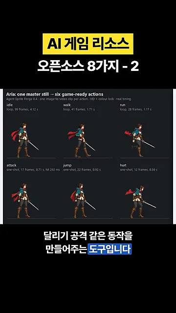
작업은 Claude Code나 Codex에 말로 시키면 돼요. 캐릭터만 만드는 것도 아니에요. 맵이나 타일 같은 리소스도 만들 수 있어요. 다음 화면은 만든 캐릭터를 배경 위에 올린 장면이에요. 산과 폐허가 있는 들판을 검사가 가로질러 달려요.
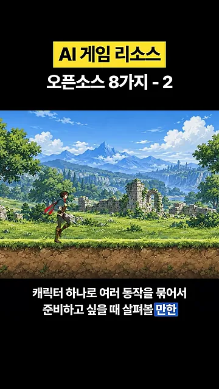
참고 이미지와 설계도로 만들기: Codixel, Pixelbolt
Codixel: 참고 이미지를 도트로 바꾸고 코드로 움직여요
Codixel은 Claude Code 스킬이에요. 참고할 이미지를 주면 그걸 바탕으로 도트 이미지를 만들고 움직임을 붙여요. 영상이 보여 주는 예시는 금빛 용이에요. 용 이미지를 도트로 바꾼 다음, 몸통과 꼬리가 움직이도록 뼈대를 잡고 코드로 움직여요.
아래 README 화면의 설명 문장이 핵심이에요. 위 그림의 왼쪽은 Claude Code가 처음부터 그린 용이고, 오른쪽은 참고 이미지를 픽셀로 바꿔 움직인 용이에요. 아래 'Example: Kinryu'는 원본 용 그림(왼쪽)이 도트(오른쪽)로 바뀐 모습이에요.
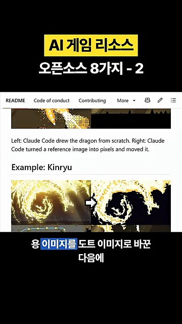
여러 이미지를 조합해서 캐릭터 하나를 만들 수도 있어요. 다음 화면은 그 과정이에요. 맨 왼쪽 빨간 칸의 날개 그림에서 출발해 날개 달린 눈 모양 캐릭터가 되고, 아래 줄에서 작은 조각들로 나뉜 뒤 마지막에 빛나는 결과로 이어져요.
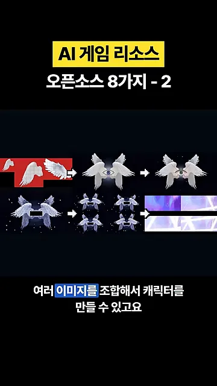
영상이 강조하는 차이는 이거예요. 이미지 생성 모델이 프레임을 매번 새로 그리는 방식이 아니에요. 참고 이미지를 가공하고 부위별 움직임을 코드로 만들어요. 그래서 마음에 안 드는 부분만 골라 다듬을 때 쓸 수 있어요. 아래 화면에서 왼쪽 보라색 큐브 그림이 오른쪽 도트 큐브로 바뀌어 있어요.
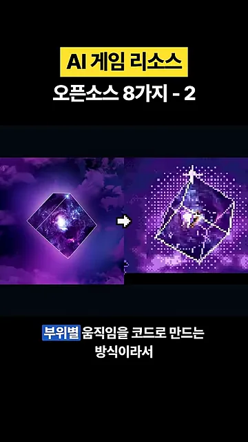
Pixelbolt: 글로 쓴 설계도를 이미지로 뽑아요
Pixelbolt는 색, 모양, 움직임을 글자로 적은 설계도를 실제 도트 이미지나 애니메이션으로 뽑아 주는 도구예요. 첫 화면의 서재 그림도 이렇게 만든 결과예요. 책장, 가운데 둥근 별자리 창, 보라색 의자, 선반 위에서 자는 고양이까지 설계도에서 나왔어요.
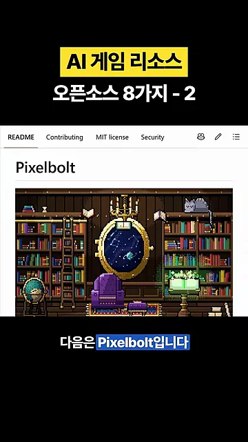
설계도는 AI 에이전트가 MCP(Model Context Protocol)나 명령어로 만들고 고쳐요. 이미지를 통째로 다시 뽑지 않아도 돼요. 색 하나나 특정 프레임만 골라 바꾸면 돼요. 아래 작업 화면을 보면 가운데에 초록 정령 캐릭터가 있고, 그 아래 줄에 프레임들이 나란히 있어요. 오른쪽 칸에는 설계도 글이, 그 아래에는 팔레트 색이 보여요.
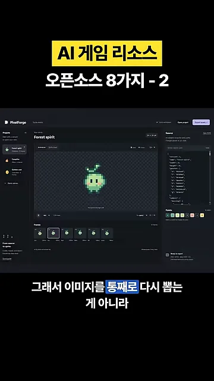
만들 수 있는 건 스프라이트, 아이콘, 이펙트예요. 다음 화면에는 모닥불, 붉은 연기, 횃불, 보라색 마법 고리 이펙트가 네 칸에 있어요. 결과는 PNG(Portable Network Graphics)나 GIF(Graphics Interchange Format), 스프라이트 시트로 내보낼 수 있어요.
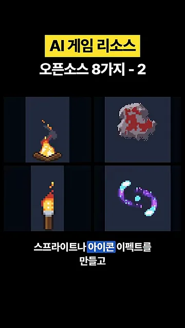
내 PC에서 돌리는 Sprite Sheet Diffusion과 후보정
Sprite Sheet Diffusion: 자세대로 캐릭터를 다시 그려요
마지막 도구는 개인 PC에서 생성 모델을 직접 돌리는 방식이에요. 캐릭터 이미지와 걷는 자세들을 순서대로 넣으면, 모델이 그 자세에 맞춰 캐릭터를 다시 그려요. 아래 화면 왼쪽이 넣어 주는 캐릭터 이미지예요. 오른쪽의 색색 막대 인형 네 개가 순서대로 넣는 자세예요.
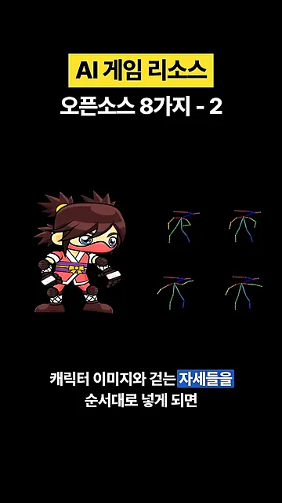
이렇게 만든 결과는 영상이나 여러 장의 이미지로 저장해요. 다음 화면에서 같은 닌자 캐릭터가 조금씩 다른 자세로 서 있어요.
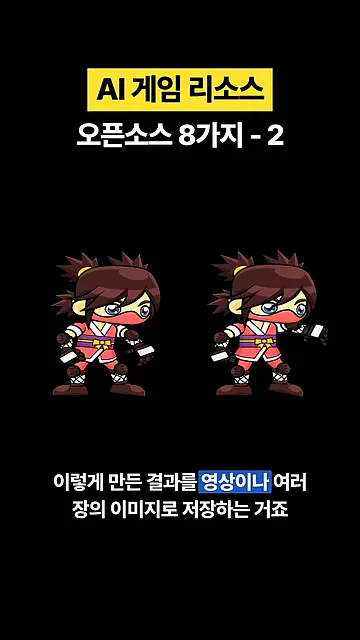
내 컴퓨터에서 돌리는 만큼 그래픽 카드가 특히 중요해요. 사양에 따라 생성 속도가 달라질 수 있어요.
네 도구를 한눈에
영상이 설명한 내용만으로 네 도구를 나란히 놓으면 이래요. 새로 그리는 쪽(Agent Sprite Forge, Sprite Sheet Diffusion)과 이미지를 가공하거나 설계도로 만드는 쪽(Codixel, Pixelbolt)으로 갈려요.
| 도구 | 넣는 것 | 만드는 방식 | 어디서 돌리나요 |
|---|---|---|---|
| Agent Sprite Forge | 기준 캐릭터 이미지 | 동작마다 영상 생성 → 배경 제거 → 장면 골라 애니메이션 | Claude Code, Codex |
| Codixel | 참고 이미지(여러 장도 가능) | 도트로 바꾸고 뼈대를 잡아 코드로 움직임 | Claude Code 스킬 |
| Pixelbolt | 색·모양·움직임을 적은 설계도 | 설계도를 도트 이미지·애니메이션으로 출력 | 에이전트가 MCP나 명령어로 |
| Sprite Sheet Diffusion | 캐릭터 이미지 + 자세 순서 | 생성 모델이 자세대로 다시 그림 | 내 PC(그래픽 카드) |
후보정은 꼭 해야 해요
영상의 마지막 당부는 도구보다 중요해요. 이런 도구로 리소스를 만들었어도 생성 결과를 그대로 쓰지 말라고 해요. 어색한 동작이나 프레임마다 부족한 부분을 직접 손봐야 해요. 아래 화면은 공격 동작 하나를 손본 전후예요. 왼쪽 'BEFORE'는 99프레임에 4.12초, 오른쪽 'AFTER'는 17프레임에 0.71초로 줄었어요. 느린 영상 그대로였던 공격이 게임 속도에 맞게 짧아졌어요.
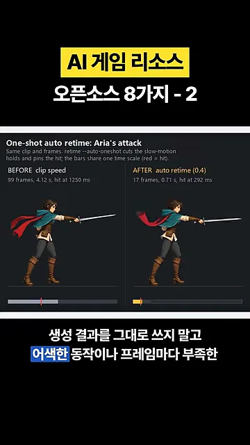
후보정 없이 쓰면 여전히 AI 슬롭 취급을 받는다는 게 영상의 경고예요. 게임에 맞는 후처리와 최적화를 꼭 거치라는 말로 끝나요.
이런 후보정이 병행되지 않으면 여전히 AI 슬롭 취급을 받게 되니까요.
— 영상 01:38